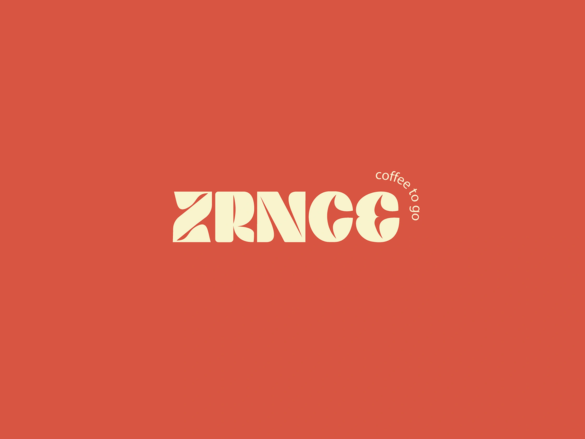
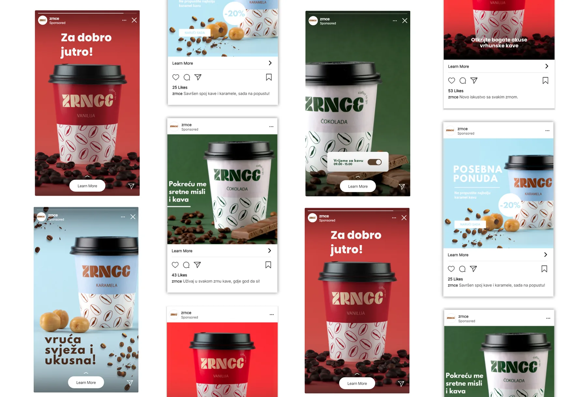
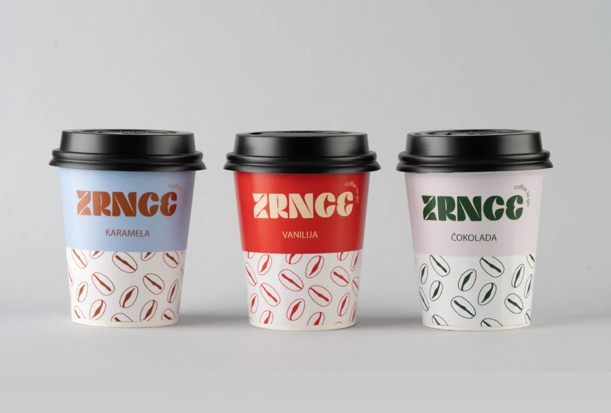
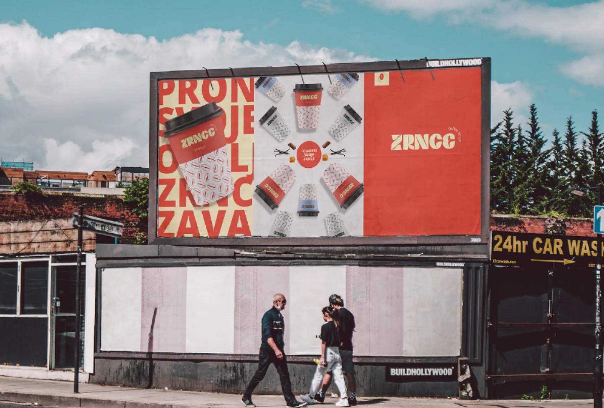
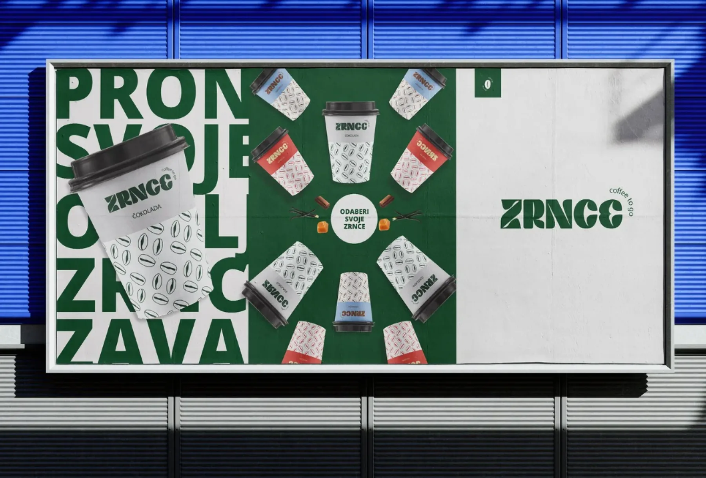

Vizualni identitet · Branding
Zrnce
Zrnce je vizualni identitet coffee-to-go brenda, primijenjen na čašama, tiskanim materijalima i društvenim mrežama.
Podaci o projektu
Izazov
Identitet je trebao biti jednostavan i prepoznatljiv, dovoljno prilagodljiv za čaše, plakate, billboarde i društvene mreže, s tri okusa koja se lako razlikuju.
Moj pristup
Oblikovala sam logotip, uzorak zrna kave, tipografiju i sustav boja s jednom bojom za svaki okus, a zatim ih dosljedno primijenila na svim materijalima.
Finalni dizajn





